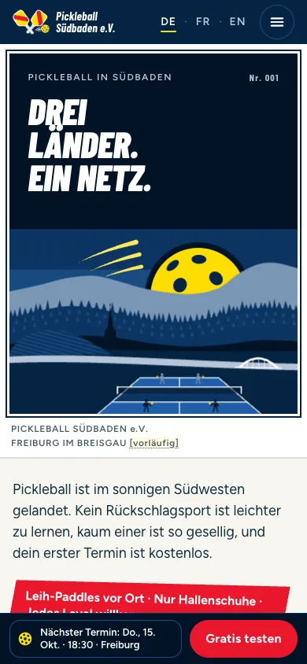

Konzept A
Paddle Passport
Ein Reiseplakat für Südbaden, nur eben für einen Sport. Der Ball geht wie die Sonne über dem Schwarzwald auf, die nächsten Termine laufen über eine Abfahrtstafel wie am Bahnhof, und Neulinge sammeln Stempel im Paddle Passport, bevor sie Mitglied werden.
Vorschaubild fehlt
a-paddle-passport/preview/de/desktop-fold.webpÖffne das Konzept, um es live zu sehen.

Vorschau fehlta-paddle-passport/preview/de/mobile-fold.webp
390 px
- Reihenfolge der Startseite
- Ausprobieren zuerst Die nächsten Termine stehen vorn.
- Die ersten Abschnitte
- Plakat-Aufmacher mit den nächsten Abfahrten
- Alle Termine auf der Abfahrtstafel
- Der Paddle Passport für Neulinge
- Was ist Pickleball?
- Schriften
- Barlow CondensedÜberschriften und Zahlen FigtreeText und Formulare
- Setzt auf
- Flache Illustration. Maßvolle Animation: Sonnenaufgang, Fallblattanzeige und Stempel.
- Fotos
- 7 KI-Beispielbilder (Motive 01, 03, 12, 13, 14, 15, 24) in Postkartenrahmen weiter unten auf der Seite. Die Illustration bleibt im Vordergrund. Ganze Seite von Konzept A ansehen

Stärken
- Die stärkste regionale Geschichte. Das Schwarzwald-Plakat, der Rhein und die Paddles mit dem badischen Wappen sagen auf einen Blick: Das ist unsere Ecke Europas. Das Plakat ließe sich sogar für Rathäuser drucken.
- Am Computer stehen die Termine sofort da. Die Abfahrtstafel zeigt die nächsten Termine und freien Plätze direkt neben der Überschrift. Auf dem Smartphone folgen sie auf das Plakat und kommen trotzdem früher als in jedem anderen Konzept.
- Jedes Reisemotiv hat eine Aufgabe. Bordkarten sind auf dem Smartphone die Terminkarten und zugleich die Buchungsbestätigung, Passstempel machen aus Schnupperbesuchen ein Spiel, und die Beiträge stehen auf Fahrkarten.
Zu bedenken
- Viele Metaphern. Plakat, Tafel, Pass, Fahrkarten und Abzeichen können ins Kitschige kippen, und die Illustration braucht für die fertige Website echten Gestaltungsaufwand.
- Es verspricht früh viel. „Drei Länder“ ist ein großer Anspruch für einen Verein, der in einer Stadt startet, und eine Abfahrtstafel glänzt erst, wenn es feste Termine gibt.